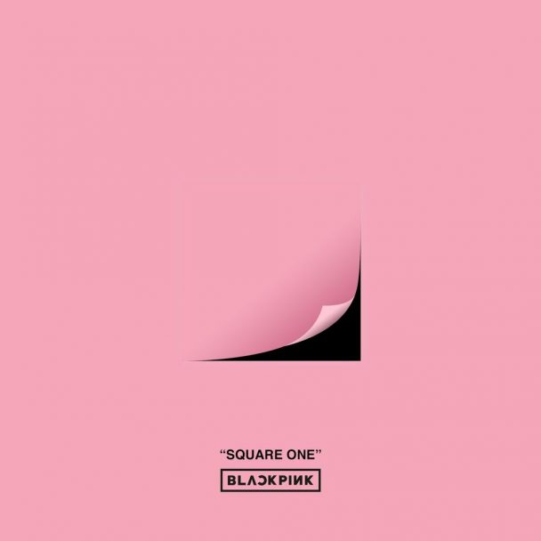
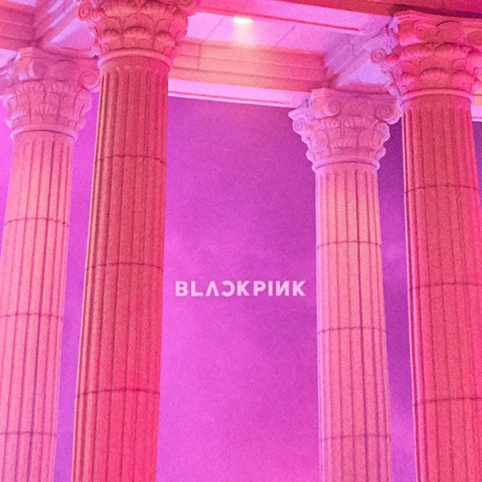
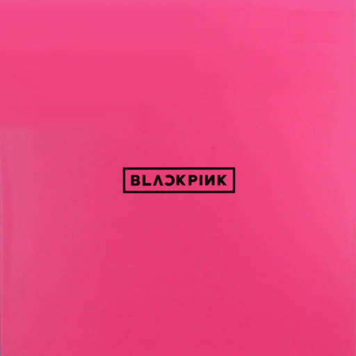

Discografia
La discografía de Blackpink se compone de cinco álbumes de estudio, tres EP y tres sencillos en CD. El grupo se formó por la compañía YG Entertainment en 2016. Blackpink publicó su primer sencillo en CD titulado Square One el 8 de agosto de 2016.
Square One se posicionó en el número uno de US World. El grupo continuó con el lanzamiento de su segundo sencillo en CD titulado Square Two el 1 de noviembre de 2016. El CD logró posicionarse en el número dos de Top Heatseekers y en la posición número uno de US World.
Su primer EP titulado Square Up, fue un éxito en varios lugares del mundo, posicionándose en el número 40 de la lista Billboard 2006, y su sencillo principal «Ddu-Du Ddu-Du» en la posición número 55 de la lista Hot 100.
Todas las canciones de Black pink por álbum y fecha
Antes de comenzar, debes saber que la discografía de BLACKPINK está compuesta por 3 álbumes de estudio (1 en coreano y 2 en japonés), 3 EP y 3 álbumes sencillos.
El grupo de YG Entertainment debutó el 8 de agosto del 2016 y desde entonces, las chicas no han hecho más que lanzar canciones con ritmos pegajosos, atrevidos y llenos de energía, colaborando con artistas de talla mundial como Lady Gaga y Selena Gómez, además de coronarse en múltiples ocasiones en los primeros puestos de listas mundiales como Billboard.
1.Square One
Fue el primer álbum sencillo de estas chicas, lanzado el 8 de agosto del 2016. Contó con dos sencillos con ritmos súper pegajosos característicos del K-Pop.
- Whistle.
- Boombayah.
Con estas canciones, lograron llegar al número uno en la lista Billboard World Digital Songs, convirtiéndose así en el grupo de K-Pop más rápido en hacerlo.
Así mismo, Whistle alcanzó el puesto número uno de la lista digital, de descarga y transmisión de los charts de Gaon en Corea del Sur.
2. Square Two
En ese mismo año, las chicas lanzaron su segundo álbum sencillo,
específicamente el 1 de noviembre del 2016. Contó con dos canciones nuevas y la versión acústica de Whistle.
- Playing With Fire.
- Stay.
- Whistle (acústica).
Para este álbum contamos con una canción un poco más lenta, romántica y melancólica que es Stay. Esta nos mostró una nueva versión de las chicas: vulnerables y con los sentimientos a flor de piel.
Square Two alcanzó y superó su debut con Square One, llegando a posicionarse una vez más en la lista Billboard World Digital Songs, y a escalar posiciones en la lista Billboard Top Heatseekers y en la lista de álbumes mundiales de Estados Unidos.
3. As If It’s Your Last
Las chicas nos hicieron esperar varios meses para escuchar una canción nueva. As If It’s Your Last fue su siguiente sencillo lanzado el 22 de junio del 2017 y junto con Playing With Fire, logró alcanzar las 2 500 000 descargas certificadas en Corea del Sur.
4. BLACKPINK
El primer EP en japonés de BLACKPINK fue lanzado el 29 de agosto del 2017 y contó con las siguientes 6 canciones:
- Boombayah (japonés).
- Whistle (japonés).
- Playin With Fire (japonés).
- Stay (japonés).
- As If It’s Your Last (japonés).
- Whistle (acústica).
Este álbum fue el tercer álbum extranjero en conseguir vender más de 319.100 copias físicas en apenas su primera semana en el Álbum Oricon Weekly Chart de Japón.